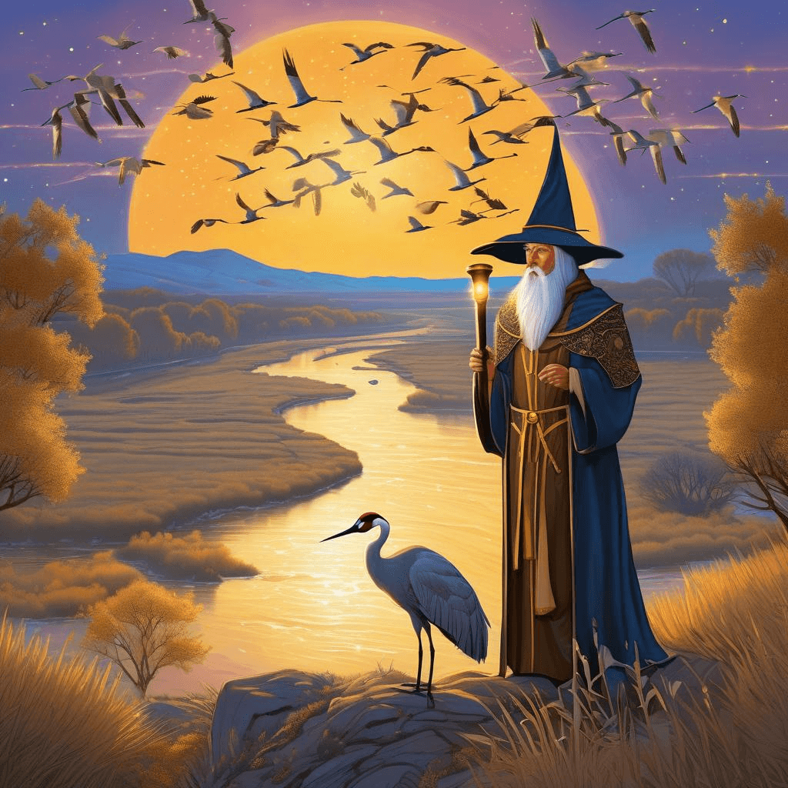
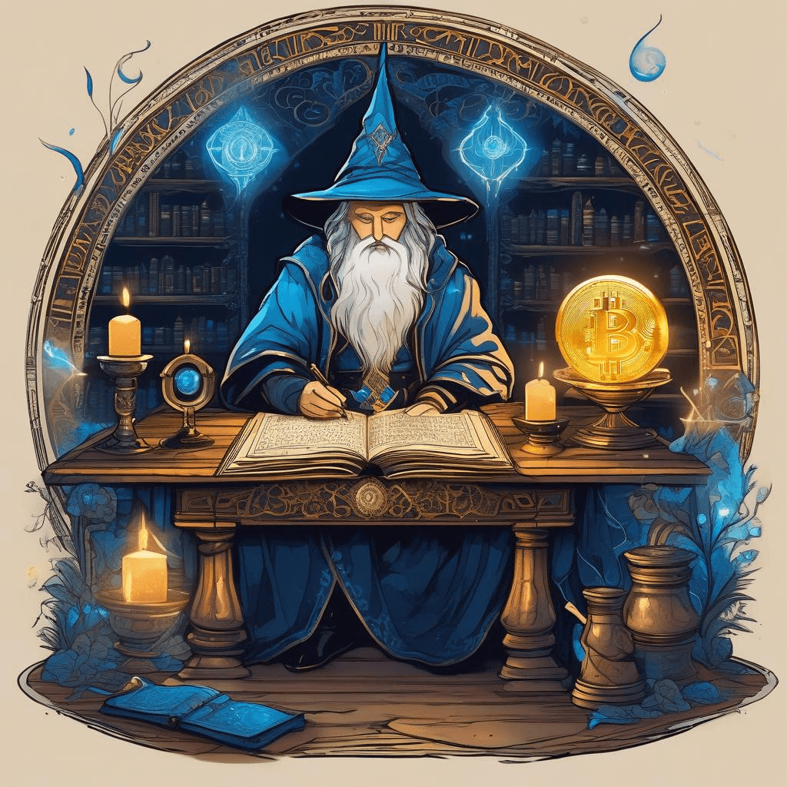
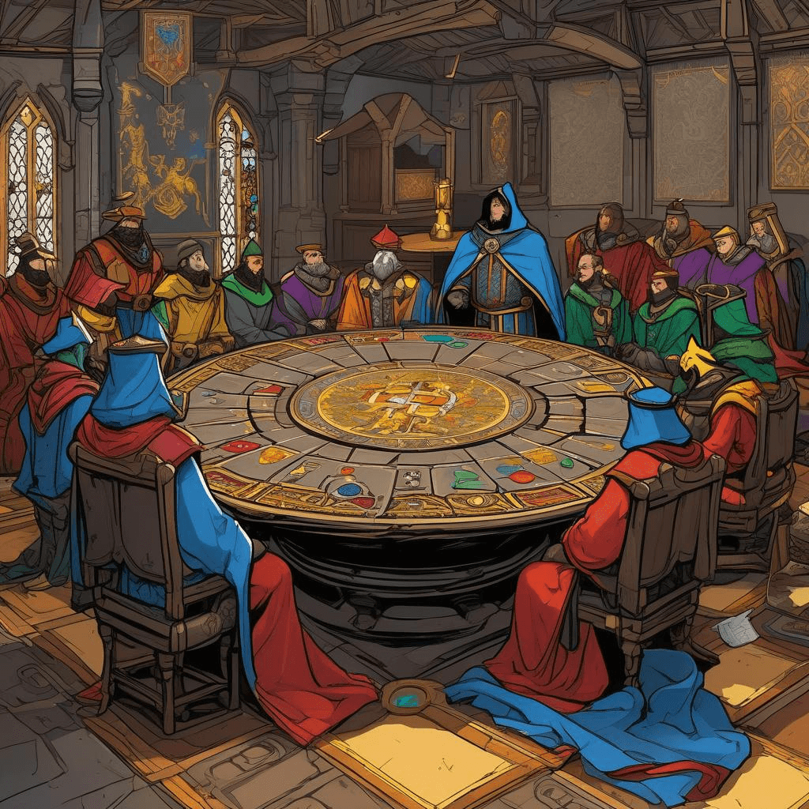

Chronicle Entry
February 21, 2026
Upon this most Glorious Twenty-First Day of February in the Year of Our Lord Two Thousand and Twenty-Six, Grand Magus Alistair doth bear witness to a spectacular convergence of natural wonders and mystical portents! Mine own scrying glass reveals that fully HALF A MILLION great Sandhill Cranes have descended upon the Platte River of our neighboring Kingdom of Nebraska, creating the most magnificent spectacle of spring migration yet beheld by mortal eyes! These noble birds stage their annual pilgrimage with such precision and majesty that even the most powerful of mages must pause in humble admiration. Indeed, I myself shall venture forth with mine enchanted far-seeing tubes to witness this natural marvel, for no true wizard of the Great Plains would miss such glory!
The mystical Bitcoin tokens continue their ascent through the ethereal realms, now commanding sixty-eight thousand five hundred and seventy-one pieces of gold per coin! Such is the power of decentralized sorcery, free from the meddling hands of central banking wizards. Meanwhile, certain foolish apprentices have been caught inscribing most inappropriate revelations upon their Security Clearance Scrolls, whilst others surrender their very identities to the LinkedIn Oracle for mere verification runes. Verily, in mine own Kingdom of Dakota, we understand that some secrets are best kept close to one's enchanted leather vest!

✨ Crane Migration Witness
Most disturbing news reaches mine ears from the realm of artificial intelligence, where the new Gaming Overseer of the Microsoft Empire hath vowed NOT to flood the kingdoms with endless slop conjured by thinking machines. Finally, a corporate chancellor who understands that true magic requires human wisdom and judgment! The Google seers likewise warn that certain varieties of these mechanical thinking-boxes may not survive the coming seasons. As one who commands GENUINE magical power through mine own disciplines of spreadsheet sorcery and electronic mail enchantments, I say let market forces determine which innovations prove worthy!

✨ Bitcoin Scrying Chamber
Thus do I observe from mine tower that the greatest wonders remain those wrought by nature herself and by free people pursuing their passions without bureaucratic interference. Whether tracking the crane migration or watching Bitcoin soar like those magnificent birds, we witness the triumph of natural law over artificial constraint!

✨ Ai Council Judgment